Self-regulating Network
Contents
The Purpose
The idea of Self-regulating network is to have an amount (eventually all) of pickup stations automatically used by one group of trains.
That way we can manage just one train group and service all industries in question automatically - regardless how much each of them produces.
There are many deviations and extra usages of SRNW as you will be able to read down below.
Technical Requirements
To get to know SRNW it is important to be aware of features like 2-way end of line and related mechanisms such as pathfinder traps.
Note: Sometimes implicit orders can create serious problems and the train order lists need to be filled with 255 orders in order to prevent creation of implicit orders!
Sideline waypoint SRNW
This is the most basic SRNW design and it is recommended to start with it as the other designs require knowledge of the basics. The basic SRNW will have those key segments:
1. SL works as a ring, while the only way out of the SL is through pickup stations
2. Trains use a waypoint order to be able to load in any of the stations they could possibly end up in, and to make them "want" to go through the stations.
3. As trains do not have a (full load) order in the stations - as they do not have any station orders - we need to make sure that trains get fully loaded. That is solved by various SRNW stations (see junctionary) , most typically using dummy trains.
After the SL exit there can happen any other order, but most typically an unpload order.


In the beginnings of SRNW, in public server game 121 and later on 149, we used waypoints which made a border of a SL as a closed mechanism, and trains would regulate over the industries connected to that sideline. As a specific, every SL typically has an overflow which needs to be controlled by some sort of logic, be it timer, on-demand release or clock which detects how long has no train overflown.
Overflow Release Conditions
We generally recognize 3 main types of overflow release. Using a timer interval. Timer is probably the easiest way how to add any overflow control, you have to set it's trigger interval manually though. Secondly there is the option to detect whether there are any free waiting bays, and releasing trains there eventually. This generally gets to a problem where you release multipler trains towards one waiting bay, because it mostly does not detect trains which are on the way towards the waiting bay. A good solution could be a clock - which is made to detect whether any trains have overflown in the last period of time, and eventually release a new train into the circuit if none has overflown. This can work sub-optimally if there is a lot of train waves. The clock is red all the time, until all the memories become red - by the little running train making a complete loop without being interrupted. Interruption occurs by resetting all memories to green whenever a train overflows.
A simple timer which blocks trains until going for the next order, usually set by a timetable.
Waiting bay detection for a SL, just like in overflow stations.
Mark's clock
Typical SRNW orders. Pay special attention to the missing non-stop on the SL Exit order.


| PSG 121 | Download: Public Server Game 121 Final / Archive entry for this game |
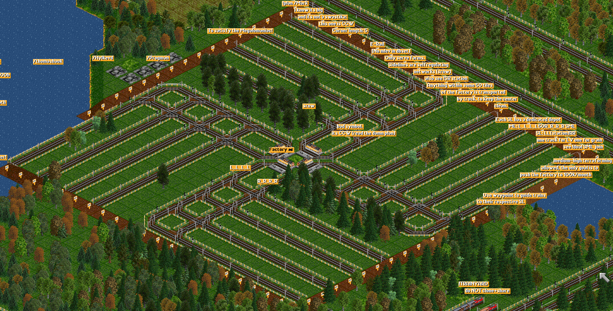 |
The first really large scale SRNW game with a lot of experiments with stations. Many self-regulating twin-sidelines with 2 cargoes used on each. |

| PSG 149 | Download: Public Server Game 149 Final / Archive entry for this game |
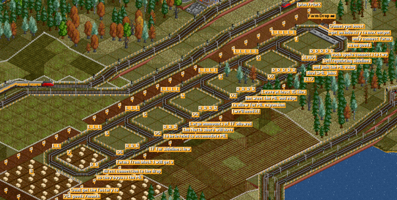 |
Another attempt to make a system of multiple sidelines consisting of 2 cargoes. |

| PSG 172 | Download: Public Server Game 172 Final / Archive entry for this game |
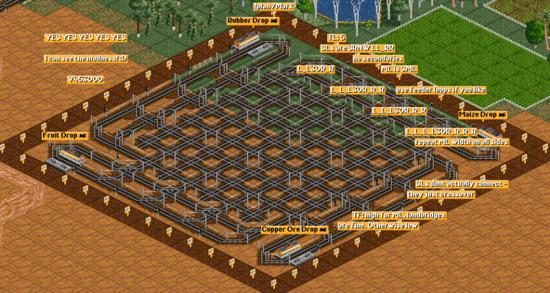 |
Trying to build a SRNW using 4 cargoes, having a separate network for each cargo. We also noticed that massive stations create huge train waves which can be a problem. |

Orderless SRNW
Later on we tried to use SRNW globally so that trains would not regulate only within a single SL, but on the whole map. To reach absolute universalness of trains, we gave trains no orders (psg157 orders have no real role). That brought immense amount of new complications of constructing splits which tell trains where to actually go. This instance of self-regulation is limited to doing only one thing - pickup and drop at stations which supply/require the cargo. We also only did this with a single cargo type as that would require more split logic. ML->SL Split is a necessary mechanism which forces trains into the waiting bay if the bay is empty. Also note the necessity of fail-safe mechanism as the 2-way entry signal on the ML could get red at any time, possibly deadlocking a train. The biggest problem with orderless trains is that their pathfinding is extremely unpredictable as even 2way eol can easily break.
Flipflop to direct ML traffic.
A counting splitter which forces every 8th train to split.
Forced split when waiting bay is empty, with fail-safe mechanism to avoild deadlocks.
Pathfinder traps neccesary to make 2way eol work with orderless trains.
This SRNW has complicated orders.


| PSG 157 | Download: Public Server Game 157 Final / Archive entry for this game |

|
A specific passenger game which made trains split in equal ratios into all 16 ICE stations on the map, using flipflops, counter splits and similar logic mechanisms. |
| PSG 180 | Download: Public Server Game 180 Final / Archive entry for this game |
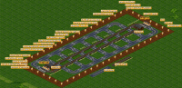 |
Truly global self-regulation split in two halves, each having access all sidelines, furtherly split in North/South drop using flipflops, so both ML ends had the same traffic coming out from the drop towards ML->SL splits. The split also helped to get rid of massive train waves from large synchronized stations. |

| PSG 199 | Download: Public Server Game 199 Final / Archive entry for this game |
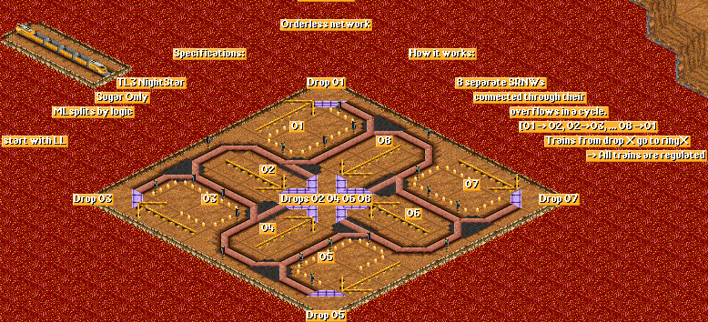 |
A system of 8 rings which overflow into the n+1th, and stay within the ring if they succeed loading. |

Conditional Order SRNW
We also tried to make a self-regulating network where trains would evaluate what to do based on what percentage of cargo they randomly collected. This is rather typically done in passenger games but we also tried it with cargo.
Closely related to this is also a technique of orders by which you can cycle the conditional orders, so that until a train is 100% full, it will be lost. This creates the same effect as orderless trains and can cause some serious issues with directing trains - unless trains go only in a loop of stations, nowhere else - but you still need them to go somewhere else to unload/transfer the cargo they collected. There is a closer article about this, but the technique is not very usable.
http://blog.openttdcoop.org/2010/12/17/a-different-srnw-sl-concept/
Another option is to make waypoints in a sequence and check train load after each waypoint. This can be necessary for refit SRNW because you still need to have some orders moving to tell trains when to refit - not just an unreachable order which would be "stuck". We did exactly this in pzg 22 where each SL had four waypoints on the ML, and on the SL exit. Each SL was a shortcut to the waypoint (as ML waypoint was heavily penalized) so trains prefered to try to pick the SL when empty (heading to that waypoint).
Once they reached that waypoint, a conditional order check was made: If train was full, it went directly to drop - ignoring all following sidelines. If it was empty, it just continued trying to join a SL and load there.
Obviously after that you are free to use any orders you want - so we used refit to complete the process, and then the trains tried to load primary cargo again. Trains which failed to load the primary cargo on all four SLs went to refit to the next cargo in the cycle. All of this allowed for 8 primary cargoes to be serviced, plus their products.
The orders are rather simple, when the train reaches the end of the loop, it decides what to do.
A bit longer order list; trains making decisions at checkpoints (waypoints).


| PSG 200 | Download: Public Server Game 200 Final / Archive entry for this game |
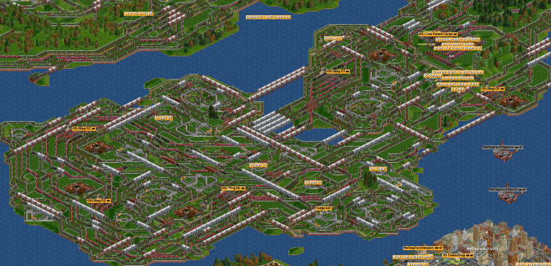 |
As one of the many things we did in this game, we tried SRNW loop with using conditional orders. |

| PSG 230 | Download: Public Server Game 230 Final / Archive entry for this game |
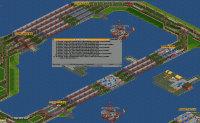 |
One of the stations had a feeder with especially simple conditional orders which even have the exact stations in orders. |

| PZG 22 | Download: Pro Zone Game 22 Final / Archive entry for this game |
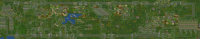 |
A network which did literally everything with just one train group. |

TL1 Leader / Timed SRNW
There were also attempts to make multi-cargo SRNW by making trains go in a certain pattern behind each other, so we would then be able to distinguis cargo type just by counting the TL1 indicator trains which created the spots. It was also tried with timing the trains instead of creating spots for real trains by TL1 separators.
There is a detailed article available on the blog: http://blog.openttdcoop.org/2012/07/07/orderless-multi-cargo-srnw-my-first-article/
Timing the trains is also a possibility http://wiki.openttdcoop.org/images/f/f5/SRNW_NoOrders1_LoPo.sav
This concept can however be done much simplier just by Unreachable waypoints below.
Unreachable waypoint SRNW
The concept of this kind of SRNW is having trains chase a destination which they can never reach, but they still see the path to it through pathfinder traps. First off, unreachable waypoint SRNW was just a concept for psg207 which would make SML work as a SRNW mechanism - making trains want to go towards the center of the circle, able to split there, but never able to reach the waypoint thanks to pf traps. Later on we realized that trains heading towards a waypoint can be very easily directed, allowing for a very feasible multi-cargo SRNW and global SRNWs in general, which we also tried in psg 223. We found out that this idea completely overthrows Orderless SRNW due to vastly reduced complications and increased amount of possibilities. This concept was furtherly re-applied in psg239 where we did it with a total of 7 cargoes.
Trains believe they can find beer through the inner ring of the SML.
Two separate splits for ore and coal, each having it's own waypoint.
A split which only makes trains splits if they are required by a certain cargo type.
Trains heading towards station they can never reach. With 255 orders to prevent implicit order creation.


| PSG 207 | Download: Public Server Game 207 Final / Archive entry for this game |

|
Unique usage of SML, turning it into a SRNW where trains use the inner ring "bait" as exit, making sure trains will not be able to exit the ML until they manage to get to the inner ring - which adds distance and randomness to the splitting towards various ICE stations. |
| PSG 223 | Download: Public Server Game 223 Final / Archive entry for this game |
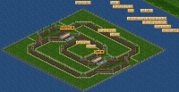 |
Two-cargo SRNW which directs trains based on two waypoints which could never be reached. |

| PSG 239 | Download: Public Server Game 239 Final / Archive entry for this game |
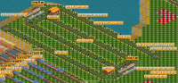 |
Having 7 cargoes brings some new problems as it is inconvenient to separate all 7 cargoes at each SL split, we even tried to make some splits which would be able to all that at once. |

Refit SRNW
When it comes to multi-cargo SRNW, we wanted not only to have a few separate groups of trains running on the same network, each group taking care of their own primaries. We wanted to have all trains be able to adapt to what cargo is needed to be transported on that SL. Therefore we did a series of conditional orders and refits, refitting until trains find cargo to load. This is typically done by having a waypoint like "Fruit Check". When trains go through the waypoint, they look if they have loaded or not - by conditional orders. If they did not load, they apparently need to refit and try again with another cargo. If they did load, they just proceed towards the drop. Making the "0% load" check behind a reverser is important in order to make trains prefer going towards the loading station (this could also be solved by massive penalties but reversers are more reliable).
The decision point, did the train exit station and is full, or did it pass around empty and needs refit to next cargo?
Typical train orders for refit SRNW. If empty, refit to next cargo.


| PSG 214 | Download: Public Server Game 214 Final / Archive entry for this game |
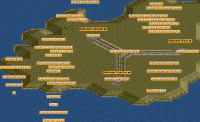 |
Every SL has one group of trains which is able to take care of all the 4 cargoes there, no matter how much of which cargo is available. |

Using MEOW Speed as Control
A drawback of the above scheme is that trains have to cycle through all cargo types to find which cargo is available to load. In order to allow trains to enter whatever station that has an open platform, they have to be able to detect which station they entered. A way to do it, is to use MEOW trains that change maximum speed based on the purr color, and conditional orders with maximum speed as the condition.
SL4 in PSG297 used this idea. Every station on the SL has a WP that can be reached both on the station entrance and further up on the sideline. Going towards the station the red purr has higher speed, when the WP is passed, the conditional order jump is evaluated. If the maximum speed is high, it jumps to orders to refit to the appropriate cargo and deliver it, otherwise the train goes on to visit the next WP.
| PSG 297 | Download: Public Server Game 297 Final / Archive entry for this game |
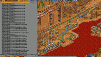 |
Every station on the SL has a WP, if the train manages to enter the station, it gets on the red purr, max speed is increased, and orders appropriate for that station are activated. Otherwise it continues to the next station on the SL. |

A variation of this method is to essentially use the trains as "barcode scanners", to let them know which cargo type the station they are entering will have. A sideline uses only two waypoints (as many waypoints, a the number of dits required to identify the cargo type by a color code). This has the advantage that the order lists for trains on different sidelines can be almost identical, except for the WP name, adding new stations doesn't require any changes to the order list. A drawback is that all the station entrances on the SL have the same WP's, limiting the size. This can be circumvented by adding a color code to let the trains know that they are leaving the coverage area of a given WP, and switching to a new set of orders using different WP's.
Example refit SRNW with two stations with different color codes to identify the cargo type, the color code dictionary and order list.

See also
Categories: GametypesAdvanced Networking